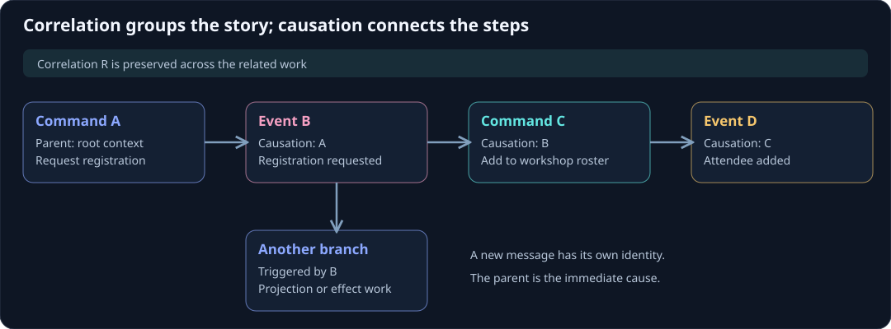

Correlation and causation
Correlation groups a story. Causation connects its individual steps. If a customer requests a workshop registration, that one interaction can cause a roster change, a read-model update, and a confirmation. They can share a correlation ID while each message has its own identity and immediate parent.
On this page
Without correlation, the same action looks like unrelated log entries. Without causation, a search finds related entries but cannot tell which message triggered which follow-up.

Walk through the chain
Consider this simplified runtime sequence. The letters represent IDs, not domain values.
| Step | Message ID | Causation ID | Correlation ID |
|---|---|---|---|
Runtime handles RequestRegistration |
A | Root context | R |
Actor produces RegistrationRequested |
B | A | R |
Roster actor handles AddAttendee |
C | B | R |
Roster actor produces AttendeeAdded |
D | C | R |
| Application creates confirmation work | E | Its triggering message | R |
The ordinary actor pipeline assigns command and event IDs as described in message metadata. This table illustrates those semantic roles; delivery tracing can add further processing steps. Log both correlation and causation so a delayed or repeated message can be understood in context.
Branching is normal
One event can have several consumers. A projection updates a registration card while an orchestration changes another actor. Those branches have a shared ancestor. Causation refers to the immediate parent, so copying a correlation ID into CausationId loses the structure of the workflow.
For an application-owned message outside the actor dispatch protocol, a helper can make a child context explicitly:
public static Metadata Child(Metadata parent) => parent with
{
MessageId = Guid.NewGuid(),
CausationId = parent.MessageId
};
The helper preserves correlation, user, device, and transaction context, creates the child message ID, and records the parent's ID. For an ordinary Troolio internal command, forward the triggering event's headers instead; the framework establishes the child command context during dispatch. Do not apply both conventions without understanding that extra processing hop.
Define where a story ends
A correlation scope is an application decision. A button click and its immediate outcomes make a useful scope. A recurring reminder tomorrow can start another scope and retain a causal reference to the scheduled trigger. A long-running business workflow may keep a separate workflow ID across many such interactions.
Avoid grouping every action by the same user under one permanent correlation ID. Support queries become noisy, and unrelated user actions look causally related. Conversely, allocating a fresh correlation ID at every actor hop makes one interaction difficult to follow.
Retries need their own identity rules
Suppose a client times out after the event commit. Sending a new request with a new correlation ID does not establish whether it should append again. Reusing the old correlation ID does not make it idempotent either. The decision belongs to the command's business identity and, for a selected route, its verified operation identity and exact request/batch evidence.
A registration actor can recognize a retry of the same registration details. A projection can recognize the same source stream/version. An effect provider can recognize a stable idempotency key. These mechanisms preserve correctness even when logs contain several attempts or tracing derives new processing message IDs.
Correlation versus distributed traces
CorrelationId is a Troolio/application GUID. A W3C trace contains a trace ID and span IDs managed by the tracing system. They can be linked through tags and log scopes, but setting a correlation ID does not start an Activity, propagate traceparent, or create a tracing exporter.
Keep both when they serve different audiences: the application correlation ID connects the business interaction, while spans show execution timing and service calls. Use observability for the C# instrumentation pattern.
Continue with orchestration workflows, idempotency and ordering, and notifications.